I’m back doing OS dev, and the honest state of things is that the kernel does the bare minimum. I hardcoded a lot of quick hacks to speedrun my way to ring 3. It was still one of the hardest things I’ve ever built and the thing I’m most proud of, but there’s a pile of stuff I should’ve done properly the first time.
The goal now is networking and running on real hardware, with a shell so the thing is actually useful. But before any of that, the memory situation is fuzzy and load-bearing, and I don’t trust it. So this post is me rebuilding the physical and virtual memory managers from the ground up. Thesis:
Almost everything my kernel “knew” about memory was a hardcoded offset that happened to work. Replacing the magic numbers with an actual physical allocator and a real higher-half address space is the whole job.
After the bootloader walks me through real mode into 32-bit protected mode and finally 64-bit long mode, control lands in _start64, which sets up a stack and calls into C:
section .text
_start64:
;; Zero .bss while RSP still points at low address bootstrap stack
cld
mov rdi, __bss_start
mov rcx, __bss_end
sub rcx, rdi
xor eax, eax
rep stosb
mov rsp, kern_stack + KERN_STACK_SIZE
call kern_main
.hang:
hlt
jmp .hang
void kern_main(void) {
__init();
__enter_user_mode();
}
That’s it. Initialize some devices, jump to user mode, and when the user program returns from main the whole system just hangs. There’s no concept of a process, and no virtual memory protection beyond whatever the CPU gives me for free.
Specifically,
__init()sets up COM1 for serial output, update GDT TSS IDT, disables PIC (forgot why), sets up syscall shit (swapgs, efer sce, star/lstar, etc.)
And “whatever the CPU gives me for free” was set up like this in the bootstrap assembly:
;; PDT with first 1GB identity mapped with 2MB pages
mov edi, PDT_PMA
mov ebx, PTTE_P | PTTE_RW | PTTE_PS
mov ecx, PTT_ENTS ; 512 entries = 1GB
.identity_loop:
mov [edi], ebx
add ebx, 0x200000 ; Next 2MB phys frame
add edi, 8
loop .identity_loop
A flat identity map of the first gigabyte with 2 MB pages. I cant’t even verify if I have a gigabyte of RAM. And the “user page” was just me finding the page directory entry containing my hardcoded USER_OFFSET and flipping the U/S bit:
#define PDT 0x3000
#define PDTE_USER (USER_OFFSET / 0x200000) // Each entry maps 2MB
void vm_init(void) {
uint64_t *pdt = (uint64_t *)PDT;
pdt[PDTE_USER] |= PTT_US;
}
Then I hand USER_OFFSET and a stack address straight to iretq. There is no memory management here. Everything is a hardcoded offset that happens to land somewhere real. So before I add processes, I want page tables I actually trust, and to trust them I need to know what physical memory even exists. That means I need an allocator, and that means I first need a map.
The canonical way to get a physical memory map on x86 is INT 15h, EAX=E820h. The catch is that it’s a BIOS interrupt, so it only exists in 16-bit real mode. I leave real mode inside my MBR, so the query has to happen there, before I switch into protected mode.
You call it in a loop. Each iteration hands you one memory region, and EBX carries the continuation value until it resets to zero, at which point the list is done. Thank god past-me commented this thing.
query_addr_map:
mov eax, 0xE820
xor ebx, ebx ; EBX must be 0 to start
xor bp, bp ; Keep entry count in BP
mov edx, 0x0534D4150 ; "SMAP"
mov di, MMAP_ENT_START ; Prevent getting stuck in INT 15h
mov ecx, 24 ; Ask for 24 bytes
mov [es:di + 20], dword 1 ; Force valid ACPI 3.X entry
int 0x15
jc error
mov edx, 0x0534D4150 ; "SMAP" - some BIOSs trash this register
cmp eax, edx ; EAX set to "SMAP" on success
jne error
test ebx, ebx ; EBX=0 implies list only 1 entry (worthless)
je error
jmp .jmpin
.e820lp:
mov eax, 0xE820 ; EAX gets trashed on every INT 15h call
mov [es:di + 20], dword 1 ; Force valid ACPI 3.X entry
mov ecx, 24 ; Ask for 24 bytes (again)
int 0x15
jc .e820f ; End of list already reached
mov edx, 0x0534D4150 ; "SMAP" - some BIOSs trash this register
.jmpin:
jcxz .skipent
cmp cl, 20 ; Got a 24 byte ACPI 3.X response?
jbe .notext
.notext:
mov ecx, [es:di + 8] ; Get lower uint32_t of memory region length
or ecx, [es:di + 12] ; OR it with upper uint32_t to test for zero
jz .skipent ; If length uint64_t is 0, skip entry
inc bp ; Got good entry, increase count
add di, 24 ; Move to next storage spot
cmp di, MMAP_ENT_END - 24 ; Room for more?
ja .e820f ; Out of space, stop early
.skipent:
test ebx, ebx ; If EBX resets to 0, list is complete
jne .e820lp
.e820f:
mov [es:MMAP_ENT], bp ; Store entry count
clc ; There is "jc" on end of list so clear carry
I write the entries to a fixed physical address and stash the count right before them. Like everything else in the bootloader, these are hardcoded, but at least now they live in config and get shared into both the assembler and the C via generated headers:
MMAP_ENT = 0x500
MMAP_ENT_START = 0x504
MMAP_ENT_END = 0x1000
These addresses take the real-mode address space1 into account so I’m not scribbling over something the BIOS still cares about. The whole region below 1 MiB is a minefield of reserved junk.
I force ACPI 3.0 (24-byte) entries by pre-seeding the extended-attributes dword to 1 before each call. The format of one entry2:
u64 is the base addressu64 is the length (if zero, ignore the entry)u32 is the region type
u32 is the ACPI 3.0 extended attributes
Before parsing anything, I dumped the raw bytes in GDB to make sure my mental model of the layout was right. Count first, then 24-byte entries back to back:
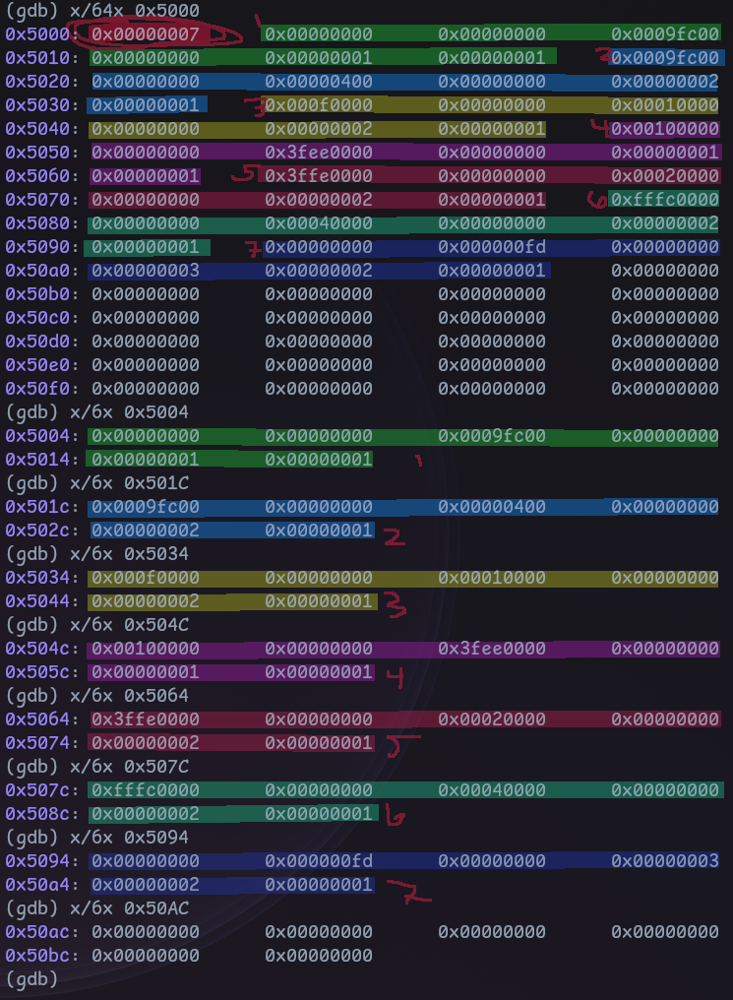
Raw E820 entries in GDB: count 7 at the base, then each 24-byte entry walked out with x/6x
Seven entries. The count 0x00000007 sits at the front, then each entry is base, length, type, ext-attrs. To make that legible I annotated the parsed output from my serial console:
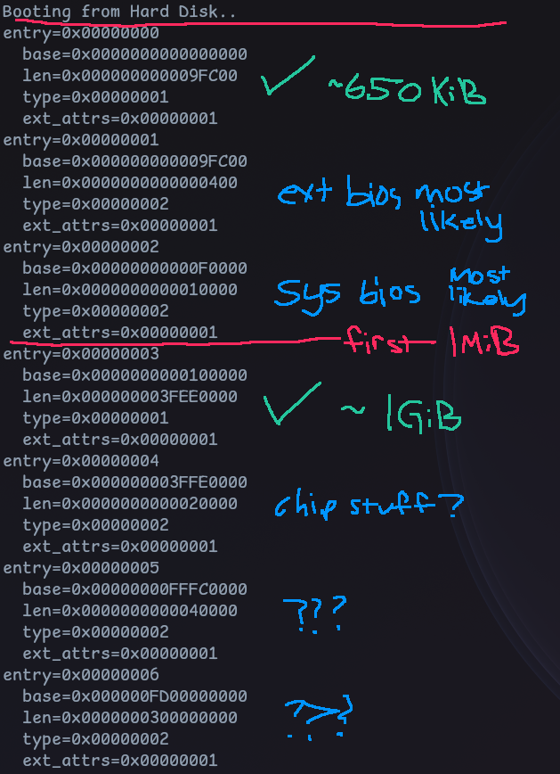
Annotated serial output of the E820 map with each region labeled
You can read the whole machine off that picture. A ~650 KiB usable chunk at the bottom, the extended and system BIOS regions, the 1 MiB line, then the big ~1 GiB usable region starting at 0x100000, and some chipset reserved ranges up top. That ~1 GiB region is the prize.
Modeling one entry in C is straightforward. The type is an enum so the code reads like the wiki table, and I pack the struct so it maps byte-for-byte onto what the BIOS wrote:
typedef enum uint32_t {
AVAILABLE = 1,
RESERVED,
ACPI_RECLAIMABLE,
ACPI_NVS,
BAD_MEMORY,
} pm_ent_type;
struct pm_region {
uint64_t base;
uint64_t len;
} __attribute__((packed));
struct pm_ent {
struct pm_region region;
pm_ent_type type;
uint32_t ext_attrs; // NOTE: ACPI 3.0 extended attributes
} __attribute__((packed));
Here’s where I hit the wall that reorganized this whole post: I sat down to write a proper parser, one that validates every entry and coalesces overlaps, and realized I can’t. I don’t know the entry count until runtime, and I have no dynamic allocator to build a validated list into. The parser would just cast the fixed address to a struct pointer and trust it, which is not parsing, it’s casting with extra steps.
So the physical memory map I wanted in order to fix my memory management turns out to need memory management to consume properly. I can’t do it “right” without knowing the E820 results until runtime, and I can’t act on those results at runtime without an allocator. Chicken, meet egg3.
I briefly worried about how many entries E820 can even return, whether I could overflow my storage. The wiki loops with ECX=24 and never states a hard cap, and honestly I don’t care enough to go source-diving. I added a bounds check in the loop (MMAP_ENT_END) so overflow is impossible and moved on.
The real simplification is this: instead of carefully honoring every region boundary, I declare that everything above the 1 MiB line is fair game and everything below it doesn’t exist to me. Below 1 MiB is where the BIOS data, the EBDA, the VGA window and all the other cursed magic numbers live 4. Above it, per the map, I’ve got one contiguous usable region, so I take the first AVAILABLE entry at or above 0x100000 and ignore the rest:
for (uint32_t i = 0; i < count; i++) {
if (ents[i].type == AVAILABLE && ents[i].region.base >= 0x100000) {
avail.region.base = ents[i].region.base;
avail.region.len = ents[i].region.len;
avail.frames = avail.region.len / PAGE_SIZE;
break;
};
}
This is not the memory-efficient choice. The region above 1 MiB is explicitly not guaranteed contiguous or standardized4, so a serious allocator would stitch together every usable entry. Breaking on the first one is a deliberate “move the fuck on” decision.
I output a little report based on what was found:
Available memory found:
base=0x0000000000100000
len=0x000000003FEE0000
frames=0x000000000003FEE0QEMU was booted with
-m 1Ghere, the current state of the repo uses32M.
Base 0x100000, length just under 1 GiB, which is 0x3FEE0 = 261,856 frames of 4 KB each. Now I need something to hand those frames out.
The OSDev wiki lists the usual physical allocator styles: bitmap, a stack or free-list of pages, sized-portion schemes, the buddy system that Linux uses, or some hybrid5. I watched a GWU OS lecture on buddy and slab6 to refresh, so here’s the honest tradeoff before I tell you I picked the boring one.
Buddy is a power-of-two allocator. You start with a big block and, to satisfy a request, recursively split it in half until you’ve got the smallest block that still fits. Say you start at 256 KB and want 32 KB. You split down the left spine until a 32 KB chunk falls out:
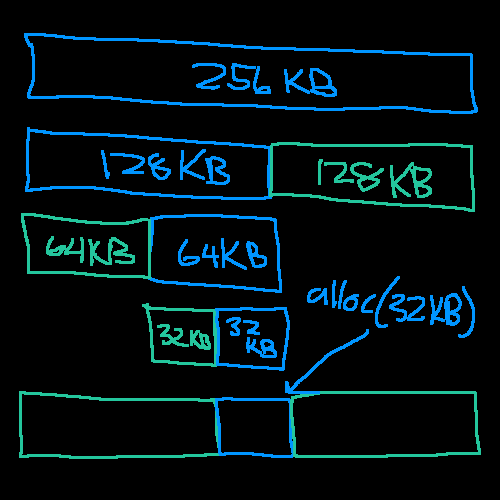
Buddy allocator splitting 256 KB down to a 32 KB allocation
The nice property shows up on the next request. Ask for 64 KB and one of the blocks you already split off is exactly the right size, no more splitting:
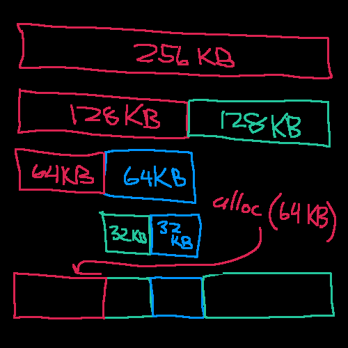
A later 64 KB request served from an already-split block
And freeing is where the name earns itself. When you release a block you check its buddy, the adjacent block of the same size at the same level, and if it’s also free you coalesce them back into the larger block. Free the 32 KB and it merges with its free neighbor:
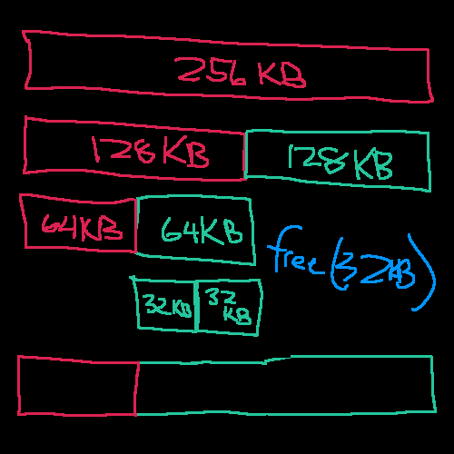
Freeing a 32 KB block and coalescing it with its buddy
The wrinkle is there are no headers on these blocks, so “where’s my buddy and is it free” isn’t answerable from the block itself. You end up needing a side structure, a bitmap, to track which regions are free at each level. So even buddy leans on a bitmap underneath. You get logarithmic allocation and clean coalescing, at the cost of that bookkeeping and the power-of-two rounding that wastes anything not a clean power of two (you can’t ask for 90 KB).
Slab takes it one step further in the opposite direction: a slab only ever allocates one fixed size. You create a slab for a specific struct and it hands out and reclaims objects of exactly that size:
struct slab *slab_create(size_t struct_sz);
slab_alloc(struct slab *s);
slab_free(struct slab *s, void *ptr);
Internally it’s a free-list, so allocation is a single pointer chase with no internal fragmentation and no coalescing to do. It’s perfect for the kernel churning through the same object type over and over (think task structs), and in a real system you’d layer it on top of buddy: slab gets slabs from buddy, buddy gets frames from the physical allocator. It’s not general-purpose on its own, though. Strings and odd sizes don’t fit the model.
Both of those are the right long-term answer and both are overkill for a kernel that is currently 9.2 KB. What I need right now is the dumbest correct thing that lets me stop bootstrapping off a hand-mapped identity region. A bitmap is one bit per frame, trivially correct, and I can always put buddy or slab on top of it later when there’s a workload that cares. So bitmap it is.
One bit per frame. Set means in use, clear means free. The bitmap itself lives at the very start of the usable region, so it’s carved out of the same memory it tracks:
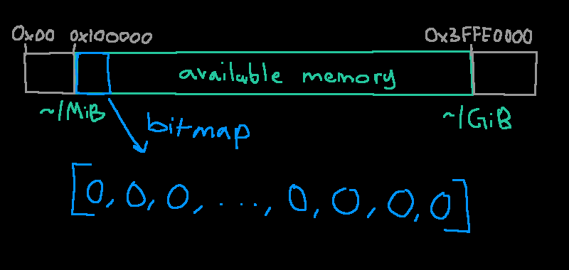
The bitmap as an array of bits at the base of the region
Bit i maps to the frame at region.base + i * 4 KiB. That’s the entire addressing scheme:
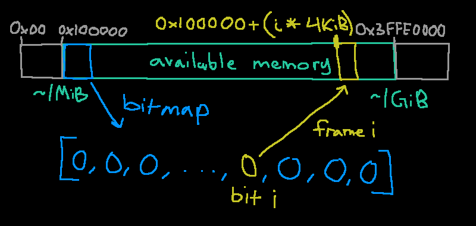
Bit i in the array corresponds to frame i at base + i*4KiB
If there are N frames I need N bits, so N/8 bytes, rounded up so a frame count that isn’t a multiple of 8 doesn’t get truncated. That’s a +7 before the divide, hidden in a macro:
#define BITMAP_BYTES(frames) (((frames) + 7) / 8)
The word type is aliased so I can widen it later. Today it’s a uint8_t; if I ever want faster scans I swap it for a uint32_t and the bit math follows the sizeof:
typedef uint8_t bitmap_word_t;
#define BITMAP_BITS (8 * sizeof(bitmap_word_t))
The bitmap’s byte count comes from BITMAP_BYTES, and its footprint in memory is that rounded up to a whole page, based at the region’s base:
struct pm_bitmap {
struct pm_region region;
size_t bytes;
bitmap_word_t *ptr;
size_t next_hint;
};
bmp->bytes = BITMAP_BYTES(avail.frames);
bmp->region.len = PAGE_ALIGN_UP(bmp->bytes);
bmp->region.base = avail.region.base;
bmp->ptr = (bitmap_word_t *)bmp->region.base;
Where the page-align macro is the usual round-up-to–4-KB:
#define PAGE_SIZE (0x1000UL)
#define PAGE_ALIGN_UP(x) (((x) + (PAGE_SIZE) - 1) & ~((PAGE_SIZE) - 1))
The set/clear/test helpers are internal to the translation unit, so static. To touch bit i you index word i / BITMAP_BITS and mask bit i % BITMAP_BITS:
static void _bitmap_clear(size_t i) {
avail.bitmap.ptr[i / BITMAP_BITS] &= ~(1U << (i % BITMAP_BITS));
}
static void _bitmap_set(size_t i) {
avail.bitmap.ptr[i / BITMAP_BITS] |= (1U << (i % BITMAP_BITS));
}
static int _bitmap_test(size_t i) {
return avail.bitmap.ptr[i / BITMAP_BITS] & (1U << (i % BITMAP_BITS));
}
Initialization is three passes. First clear everything, because I can’t assume this memory is zeroed. Then set the bits for the frames the bitmap itself occupies, because the allocator must never hand out the pages it’s living in:
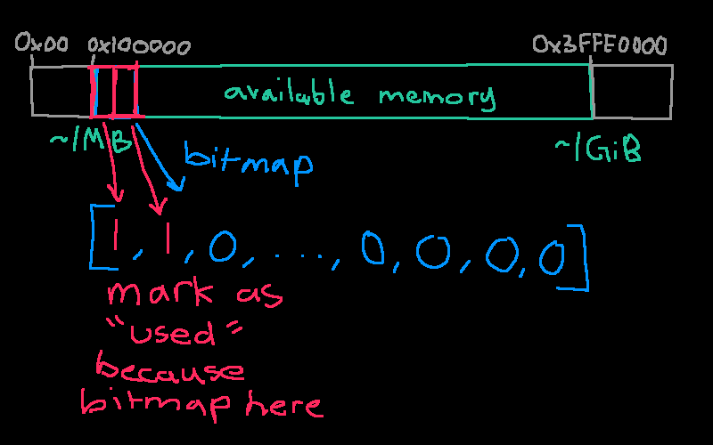
Setting the first bits because the bitmap occupies those frames
The bitmap byte count almost never lands exactly on the frame count, so there are leftover high bits in the last byte that don’t correspond to any real frame. If I leave those clear, the allocator will happily “find” a free frame that doesn’t physically exist. So I set them too:
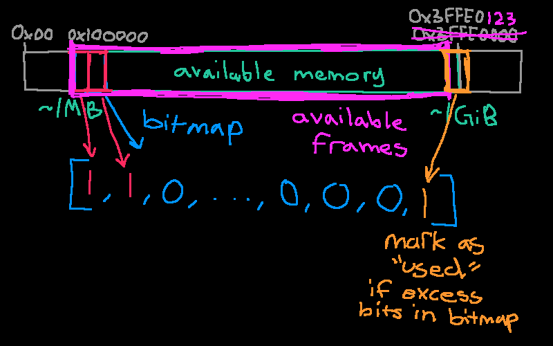
Setting the trailing excess bits so the allocator never returns a non-existent frame
Put together, and folding the bitmap’s own frames into a next_hint I’ll explain in a second, pm_init ends like this:
for (size_t i = 0; i < avail.frames; i++)
_bitmap_clear(i);
for (size_t i = avail.frames; i < bmp->bytes * BITMAP_BITS; i++)
_bitmap_set(i);
bmp->next_hint = bmp->region.len / PAGE_SIZE;
for (size_t i = 0; i < bmp->next_hint; i++)
_bitmap_set(i);
return &avail.region;
Dumping the state confirms the math. The bitmap sits at 0x100000, the first byte is 0xFF, and its page-aligned length is 0x8000, so it spans 8 frames:
Available memory found:
base=0x0000000000100000
len=0x000000003FEE0000
frames=0x000000000003FEE0
Bitmap:
bytes=0x0000000000007FDC
region:
base=0x0000000000100000
len=0x0000000000008000
*ptr=0xFF, ptr=0x0000000000100000
ptr:
val=0xFF
derefed=0x0000000000100000
data=
0x00000000000000FF
0x0000000000000000
0x0000000000000000
...
Sorry the coloring is weird. If I set the language to
txtthe formatting is off so just set it tosh!
pm_alloc_frame returns one frame. Scanning the whole bitmap every call is O(n), so I keep a next_hint and start scanning there, wrapping around the end. It’s a cheap next-fit that avoids rescanning the low frames every time:
uint64_t pm_alloc_frame(void) {
for (size_t n = 0; n < avail.frames; n++) {
size_t i = (avail.bitmap.next_hint + n) % avail.frames;
if (!_bitmap_test(i)) {
_bitmap_set(i);
avail.bitmap.next_hint = i + 1;
uint64_t addr = avail.region.base + i * PAGE_SIZE;
return addr;
}
}
return PM_NULL_FRAME;
}
Free is the inverse, with range checks so a bogus address is a no-op rather than memory corruption:
void pm_free_frame(uint64_t phys_addr) {
if (phys_addr < avail.region.base)
return;
size_t i = (phys_addr - avail.region.base) / PAGE_SIZE;
if (i >= avail.frames)
return;
if (_bitmap_test(i)) {
_zero_frame(phys_addr);
_bitmap_clear(i);
}
}
I zero the frame on free, so a page later handed to userspace doesn’t arrive full of leftover kernel data someone could read. There’s no memset yet, so it’s a hand-rolled 64-bit-at-a-time loop:
static void _zero_frame(uintptr_t pa) {
for (size_t i = 0; i < PAGE_SIZE / sizeof(uintptr_t); i++)
((uintptr_t *)vm_ptov(pa))[i] = 0;
}
That
vm_ptovis a forward reference. Once the real page tables are up, the bitmap and every frame get reached through a physmap window instead of by raw physical address. I’ll get there. For now just note that_zero_framealready goes through it.
A quick test, alloc then free, watched in GDB:
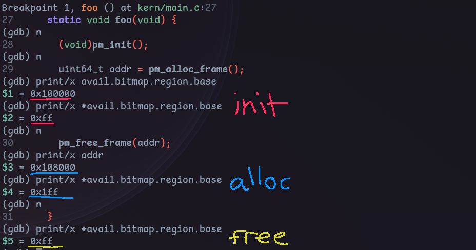
GDB showing the bitmap at init 0xff, then 0x1ff after an alloc, back to 0xff after free
At init the bitmap’s first byte is 0xFF, the 8 frames it occupies. The first allocation returns 0x108000, the ninth frame, right after the bitmap, and the byte becomes 0x1FF. Freeing it drops back to 0xFF. The allocator works. So now I have a source of physical frames, which means I can finally build page tables that aren’t a hardcoded identity map!
A higher-half kernel has been the goal since I first started thinking about virtual memory7. The idea: the kernel lives at the top of every address space, the same virtual range in every process, and the bottom is left for user code. When I add per-process address spaces later, every process shares the kernel’s upper mappings, so a syscall or interrupt doesn’t need a CR3 switch.
The specific address falls out of a compiler flag, not a preference. GCC’s -mcmodel=kernel 8 says the kernel “runs in the negative 2 GB of the address space.” Decode that literally: the max 64-bit virtual address is 0xFFFF_FFFF_FFFF_FFFF, subtract 2 GB (0x8000_0000) and add 1, and you land on 0xFFFF_FFFF_8000_0000.
0xFFFF_FFFF_FFFF_FFFF - 0x8000_0000 + 1 = 0xFFFF_FFFF_8000_0000
That’s my KERN_VMA. The kernel model tells GCC every symbol lives in the top 2 GB, so it emits 32-bit sign-extended displacements to reach them. Put the kernel anywhere else in the high half and those relocations can’t reach, and you get the relocation truncated to fit error from the other direction. The number isn’t a design choice, it’s two’s complement.
x86–64 doesn’t actually use all 64 bits for addressing; it uses 48 (before 5-level paging). Bits 63:48 must be a sign-extension of bit 47, or the address is non-canonical and touching it faults with #GP. That carves the space into three:
0x0000000000000000 - 0x00007FFFFFFFFFFF # bit 47 = 0, upper bits 0 (low half)
0x0000800000000000 - 0xFFFF7FFFFFFFFFFF # NON-CANONICAL, GP on use
0xFFFF800000000000 - 0xFFFFFFFFFFFFFFFF # bit 47 = 1, upper bits 1 (high half)
The PML4 index is bits 47:39. Index 256 is 0b100000000, i.e. bit 47 set, so every high-half address lands in PML4[256..511] and every low-half address in PML4[0..255]. The user/kernel split is exactly the canonical boundary, expressed as table indices. That’s the elegance: it’s literally impossible for a non-kernel pointer to carry a leading 0xFFFF.
And you get free debugging out of it. Glance at any address:
0xFFFF... is kernel0x0000... is userThat third case is the underrated one. A garbage value is overwhelmingly likely to be non-canonical, so it faults immediately instead of silently reading something.
My kernel has to fit in that 2 GB window, which, no worries, I’m not writing a 2 GB kernel.
The problem: I start executing at low physical addresses because that’s mandatory when jumping up through real, protected, and long mode. You can’t load a 64-bit virtual address into anything until you’re already in long mode with paging on. So a slice of code has to run at its physical address while the rest is linked high.
The linker script solves this cleanly. .text.boot stays at its load address (0x8000), and everything after it is linked at KERN_VMA + LMA, with AT() telling the linker the physical load address is still low:
ENTRY(_start)
SECTIONS {
. = KERN_OFFSET;
/* Runs in 32-bit pmode before paging reaches the higher half, so VMA == LMA
* here. This is the only code linked at a physical address. */
.text.boot ALIGN(0x1000) : {
*(.text.boot)
. = ALIGN(0x1000);
}
__kern_lma = .;
. = KERN_VMA + __kern_lma;
.text ALIGN(0x1000) : AT(ADDR(.text) - KERN_VMA) {
__text_start = .;
*(.text*)
. = ALIGN(0x1000);
__text_end = .;
}
/* .rodata, .data, .bss follow the same AT(ADDR - KERN_VMA) pattern */
To reach the high-linked code I add a second mapping in the boot assembly: PML4[511] points at a high PDPT, whose entry 510 points at the same page directory the identity map uses. Both PML4_IDX(KERN_VMA) and PDP_IDX(KERN_VMA) are computed from the config value so the indices can’t drift:
;; PML4[511] -> PDPT_HI
mov edi, PML4T_PMA + PML4_IDX(KERN_VMA) * PTTE_SIZE
mov dword [edi], PDPT_HI_PMA | PTTE_P | PTTE_RW
;; PDPT_HI[510] -> PDT
mov edi, PDPT_HI_PMA + PDP_IDX(KERN_VMA) * PTTE_SIZE
mov dword [edi], PDT_PMA | PTTE_P | PTTE_RW
Both halves now point at the same page directory, so physical 0x0-0x40000000 is visible at both 0x0 and 0xFFFFFFFF80000000. That’s what lets the far jump into the high-half kernel land somewhere real. To get there I trampoline through a register, because you can’t directly jmp to a full 64-bit immediate:
jmp KERN_CODE_SEL:_trampoline
[bits 64]
_trampoline:
mov rax, _start64
jmp rax
The boot-time tables were a means to an end: get into long mode with something mapped. Now that I have a physical allocator, I throw them away and build proper 4 KB tables from allocated frames.
The 2 MB identity map was fine for bootstrapping but wrong for a real kernel. With 2 MB pages the entire kernel shares one giant page, which means .text is writable because the stack lives in the same page. That’s the opposite of what I want. 4 KB pages let me give each section its true permissions, and they add the fourth level of table (the PT) that all the documentation actually talks about. On the CPU side it’s just clearing the PS bit in the PDE9.
Here’s the problem building tables in the high half: to install an entry I need to write to a page table, but a page table is addressed by its physical frame, and once I drop the identity map I have no virtual address for arbitrary physical memory. The standard fix is a physmap: map all of physical RAM once at a fixed high base (PHYSMAP_BASE), so physical address pa is always reachable at pa + PHYSMAP_BASE. Two tiny inlines capture the whole convention:
static inline void *vm_ptov(uint64_t addr) {
return (void *)(addr + PHYSMAP_BASE);
}
static inline uint64_t vm_vtop(void *addr) {
return (uint64_t)addr - PHYSMAP_BASE;
}
The top-level pml4 is a static, page-aligned array in .bss, so it has a real symbol I can point CR3 at. Every lower table is a fresh physical frame from pm_alloc_frame, reached for writing through table_base (which is PHYSMAP_BASE once the physmap exists):
static uintptr_t pml4[PTT_ENTS] __attribute__((aligned(PAGE_SIZE)));
static uintptr_t table_base = 0;
static uintptr_t *_table_ptr(uintptr_t pa) {
return (uintptr_t *)(pa + table_base);
}
static uintptr_t _alloc_table(uintptr_t *ptte, uint64_t flags) {
if (!ptte || *ptte & PTTE_P)
return 0;
uintptr_t pa = pm_alloc_frame();
if (pa == PM_NULL_FRAME)
return 0;
*ptte = (pa & 0x000FFFFFFFFFF000UL) | PTTE_P | flags;
return pa;
}
vm_map walks the four levels, allocating any missing intermediate table, and writes the leaf. The index macros just slice the virtual address into its 9-bit fields:
#define PML4_IDX(va) (((va) >> 39) & 0x1FF)
#define PDP_IDX(va) (((va) >> 30) & 0x1FF)
#define PD_IDX(va) (((va) >> 21) & 0x1FF)
#define PT_IDX(va) (((va) >> 12) & 0x1FF)
int vm_map(uintptr_t va, uintptr_t pa, uint64_t flags) {
uintptr_t *pml4e = &pml4[PML4_IDX(va)];
if (!(*pml4e & PTTE_P) && !_alloc_table(pml4e, flags))
return -1;
uintptr_t *pdpe = &(_table_ptr(PTTE_ADDR(*pml4e)))[PDP_IDX(va)];
if (!(*pdpe & PTTE_P) && !_alloc_table(pdpe, flags))
return -1;
uintptr_t *pde = &(_table_ptr(PTTE_ADDR(*pdpe)))[PD_IDX(va)];
if (!(*pde & PTTE_P) && !_alloc_table(pde, flags))
return -1;
uintptr_t *pte = &(_table_ptr(PTTE_ADDR(*pde)))[PT_IDX(va)];
if (!(*pte & PTTE_P))
*pte = PTTE_ADDR(pa) | flags | PTTE_P;
return 0;
}
There’s a real footgun here: if an intermediate table already exists,
_alloc_tablebails and the new mapping’sflagsnever reach that level. Passing leaf flags down to the table entries was only ever for the user mapping, and it means the caller has to know about intermediate tables, which is TERRIBLE.
vm_init lays down the physmap first (NX and writable, because it’s data not code), then each kernel section with the permissions it should actually have, then swings CR3 over to the new pml4. The section boundaries come straight from the linker symbols:
int vm_init(uintptr_t physmap_pa, size_t physmap_len) {
if (vm_map_range(PHYSMAP_BASE, physmap_pa, physmap_len, PTTE_NX | PTTE_RW) < 0)
return -1;
if (vm_map_range((uintptr_t)__text_start, _kern_v2p(__text_start),
_seclen(__text_start, __text_end), 0) < 0)
return -1;
if (vm_map_range((uintptr_t)__rodata_start, _kern_v2p(__rodata_start),
_seclen(__rodata_start, __rodata_end), PTTE_NX) < 0)
return -1;
if (vm_map_range((uintptr_t)__data_start, _kern_v2p(__data_start),
_seclen(__data_start, __bss_end), PTTE_RW | PTTE_NX) < 0)
return -1;
table_base = PHYSMAP_BASE;
_load_cr3(_kern_v2p((char *)pml4));
return 0;
}
So the sections finally get honest bits:
.text executable, read-only (flags 0, so present + read + execute).rodata read-only, NX.data and .bss read-write, NXI enabled NXE back in the boot assembly (the 0x900 into EFER sets LME and NXE together) so the NX bit is actually respected.
To sanity-check that the higher-half linking really lines up with what’s on disk, I opened the kernel ELF and the disk image side by side in Cutter:
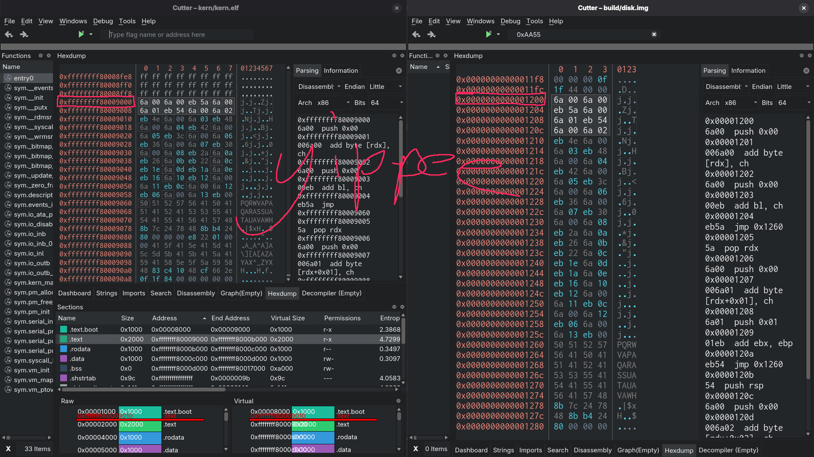
Cutter comparing kern.elf and disk.img: .text at VMA 0xffffffff80009000 matches the bytes on disk, sections table showing r-x/.text, r—/.rodata, rw-/.data
The .text section is linked at virtual 0xFFFFFFFF80009000 but its bytes sit at physical 0x9000, which on disk is offset 0x1200 (the kernel starts at sector 1, 0x200, and .text is one page into it). Same bytes in both panes. The sections pane shows the permissions landing exactly as intended: r-x for .text, r-- for .rodata, rw- for .data and .bss.
One consequence of the physmap that bit me and is worth calling out. During pm_init, the identity map is still live, so the bitmap pointer is a raw physical address (0x100000) and dereferencing it just works. But vm_init drops the identity map. After that, 0x100000 is no longer mapped, and the bitmap has to be reached through the physmap like everything else. So there’s an explicit fixup that runs right after vm_init:
/* FIXME: Refactor. This function is weird and a footgun */
void pm_update_ptr(void) { avail.bitmap.ptr += PHYSMAP_BASE; }
And the init sequence in kern_main is ordered around exactly that dependency: build the map, hand its length to the VMM, then relocate the bitmap pointer:
const struct pm_region *physmap = pm_init();
if (!physmap)
return;
if (vm_init(0, physmap->len) < 0)
return;
pm_update_ptr(); // FIXME: See fn definition
It’s tagged FIXME because a function that silently adds a constant to a pointer is exactly the kind of thing that fucks me over in six months when I forget it exists.
With real page tables I can finally map a user program properly instead of poking a U/S bit into a 2 MB identity page. __enter_user_mode maps a fresh user-accessible range at virtual address 0, reads the program in off disk, and iretqs down to ring 3 with the stack one page up:
static int __enter_user_mode(void) {
const uintptr_t va = 0;
// FIXME: The flags => executable AND read/write. Need I say more?
if (vm_map_range(va, USER_OFFSET,
PAGE_ALIGN_UP(USER_SECTORS * DISK_BLOCK_SIZE),
PTTE_RW | PTTE_US) < 0)
return -1;
io_ata_pio_read(USER_LBA, USER_SECTORS, (uint32_t *)va);
asm("movq %0, %%rax\n\t"
"movw %%ax, %%ds\n\t"
/* ... load the other data segments ... */
"pushq %0\n\t" // SS = user data selector
"pushq %1\n\t" // RSP = va + PAGE_SIZE
"pushq $0x202\n\t" // RFLAGS with IF set
"pushq %2\n\t" // CS = user code selector
"pushq %3\n\t" // RIP = va
"iretq"
:
: "r"((uint64_t)GDT_USER_DATA_SEL), "r"((uint64_t)(va + PAGE_SIZE)),
"r"((uint64_t)GDT_USER_CODE_SEL), "r"((uint64_t)va)
: "rax", "memory");
return 0;
}
It works, and it’s already better than the old scheme, which read the program into a fixed offset before paging was even up. But look at the flag on that mapping: PTTE_RW | PTTE_US, no NX. The user page is writable and executable… which I’ll fix later, I just wanna get this blog post out.
I set out to replace the memory management vibes with something real, and that’s done: a physical allocator backed by the E820 map, a genuine higher-half address space, 4 KB page tables built from allocated frames with per-section permissions, and a physmap so I can actually manipulate those tables. The kernel no longer runs on an identity map and a prayer.
The next OS dev post will either be the shell, so I can actually run things in userspace against the syscall API I already have, or networking (probably the shell).